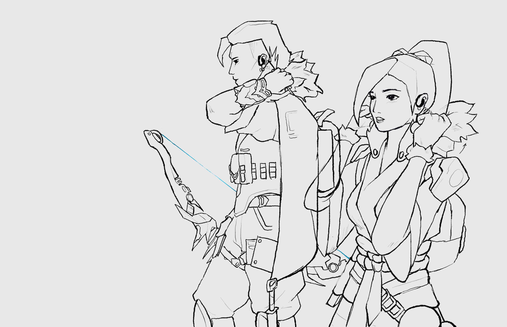
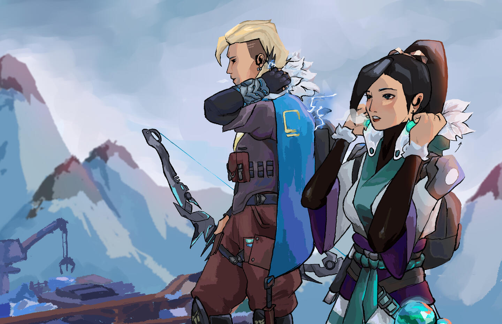

| most of my digital drawings start out with creating models using magicposer.com. i do this to make sure i have the correct anatomy and angles before i start
next, i start out with a very rough sketch (i lost the original file but this is usually what it looks like) i also start to use references to map out the shapes of the character

later is my lineart, but this example is SUPER UNREALISTIC!!, i go in and spend hours on lineart. there are usually 2-3 versions before the final
next is the background. i work from the back to the front (i split the layers up here) i also draw the background with the focus of my drawing, visible so it is naturally incorperated into the scene
then i do my flat colors and simple cell shading! suprisingly, this is the least fun part because of how tedious it is..

❮
❯
lastly, with some color mapping, hue changes, and atmospheric lighting, it is finished!!
|
||
|---|---|---|
| |
← this outfit concept (left) inspired the piece i did above |
|